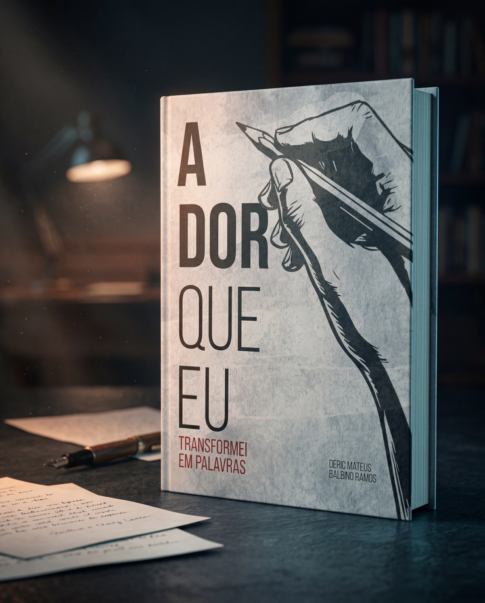

Crônicas · Literatura Brasileira
em palavras
Uma coletânea de crônicas que navega pelos territórios mais íntimos da experiência humana — o amor que fere, o tempo que transforma, e o luto que ensina.

"Porque escrever não é apenas contar histórias.
É sobreviver a elas."
Sobre o livro
Há dores que não cabem no silêncio. Este livro nasceu delas.
Em "A Dor que Eu Transformei em Palavras", Deric Mateus Balbino Ramos apresenta uma coleção de textos profundamente pessoais, divididos em cinco partes que exploram os sentimentos que nos definem enquanto humanos.
Da Parte 1, onde o autor reflete sobre amores que partem e corações que aprendem a se proteger, até a comovente Parte 5 — um tributo emocionante à sua avó Dona Daria —, cada crônica é um mergulho na essência do que significa sentir.
Entre personagens reais e fictícios, como Clarinha, Seu Jorge, Karlisson e Manuela, o leitor encontrará reflexões sobre o tempo que não para, a infância que ficou para trás, e a difícil arte de transformar dor em cura.
Com uma voz autoral marcada pela vulnerabilidade e pela poesia, este livro é um convite para aqueles que não têm medo de sentir. Para quem entende que toda ferida tem um limite de silêncio. Para quem sabe que a escrita pode ser o remédio que a medicina nunca inventou.
Este livro é para você que já chorou em silêncio, amou sem ser correspondido, perdeu quem amava, e mesmo assim, continuou. Porque enquanto houver palavras, haverá cura.
Toda ferida tem um limite de silêncio.
O luto começa antes da partida, no medo de que ela aconteça.
Porque escrever não é apenas contar histórias. É sobreviver a elas.
O autor
Deric Mateus Balbino Ramos nasceu em junho de 2002, em Arapiraca, Alagoas. Escritor desde a adolescência, é autor de dezenas de crônicas que misturam poesia, reflexão e realidade emocional.
Sua escrita nasceu do luto e floresceu na coragem de transformar o que o feriu em arte. Escrever, para Deric, não é apenas um exercício literário — é um ato de sobrevivência, cura e libertação.
Hoje vive em Alphaville, São Paulo, atua em projetos criativos e segue compartilhando sua jornada através das palavras e das redes sociais.
Disponível agora